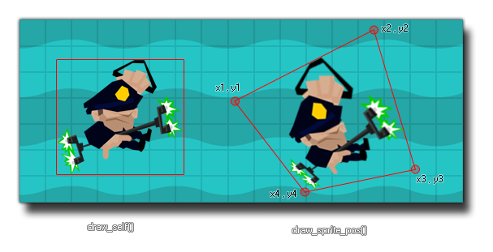

draw_sprite_pos
Draws a sprite stretched between four given points and with an alpha blend.
Syntax :
draw_sprite_pos(sprite, subimg, x1, y1, x2, y2, x3, y3, x4, y4, alpha);
| Argument | Description |
|---|---|
| sprite | The index of the sprite to draw. |
| subimg | The subimg (frame) of the sprite to draw (image_index or -1 correlate to the current frame of animation in the object). |
| x1 | The first x coordinate. |
| y1 | The first y coordinate. |
| x2 | The second x coordinate. |
| y2 | The second y coordinate. |
| x3 | The third x coordinate. |
| y3 | The third y coordinate. |
| x4 | The fourth x coordinate. |
| y4 | The fourth y coordinate. |
| alpha | The alpha of the sprite (from 0 to 1 where 0 is transparent and 1 opaque). |
Returns : N/A
Description
With this function you can draw a sprite distorted over the area defined by the four corner coordinates. The first two arguments are the sprite to draw and the sub-image of the sprite (the same as in
the function draw_sprite) but the next ones are those that define the position of each of the four corners of the bounding box of the
given sprite. These should be given in anti-clockwise order, so the first coordinate is the top left, then the top right, then bottom right and finally the bottom left. You can also set a value for
the alpha of the sprite to draw it with transparency. The image below illustrates how this function works:

Example :
draw_sprite_pos(sprite_index, image_index, x - 100, y - 50, x + 100, y, x+100, y +200, x-50, y +150, 1);
The above code will draw the sprite associated with the instance running the code distorted around the x / y position of the instance and with a fully opaque alpha.